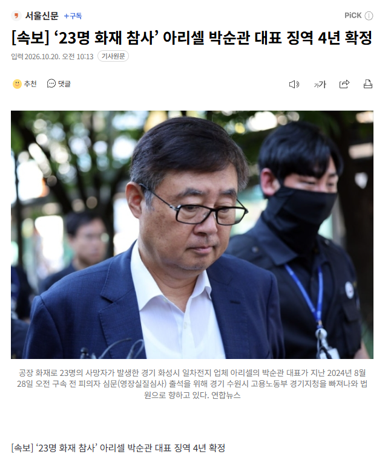

[속보] ‘23명 화재 참사’ 아리셀 박순관 대표 징역 4년 확정
댓글
전관써도 무기>4년은 못하지
10~15년정도 나왔을걸
우리 외가쪽 어르신중 한분도 딱 저렇게 비슷한 상황으로 징역 다녀왔는데
사업 잘 하더라
병신 자랑이라고
4년? 레전드네
합의 하는척 엄청 하더니 4년으로 선방했네라고 생각하려나
시발 ㅋㅋ
진짜 대한민국 형량 존나 낮음
대량 살상이 꼴랑 4년이라니 법이 문제냐 전관이 문제냐
중처법이 어쩌고 저쩌고 하더만
행정부서 지랄해도 법원에서 씹으면 방법이 없지 뭐
핑계
그럼 뭐 행정부서 경찰 군대 동원해서 감금이라도 해야하나? 총살해?
법 제정할 때는 그럴 기세였음
변호사 뺑뺑이 돌고 영치금 넉넉하게 넣어 쓰면 금방이겠네
합의를 한게 큼 다들 합의 한거 기억 못하나?
싸게 막았네
낮게 나오면 보통 낮게 나온 이유가 있음
합의봐서 낮게 나온거겠지. 근데 합의 안보면 그냥 집안 가장 죽고 가정 무너지고 끝이니 합의 안볼수도 없고.
ㄴㄴ 틀렸음 이거 자세히 알아보면 법이 잘못되었고 변호사가 법이 잘못된 부분을 잘 파고 들었음
일반 건축물법은 층당 비상구가 1개씩 있어야 한다고 되어있는데
저런 공장건물은 비상구를 설치해야 한다고만 써있고 층별로 설치해야 한다고 명시를 안해놨음
1심판사는 상식적으로 층당 1개가 아니겠냐며 유죄를 줬는데
2심판사가 명시를 안해놨으니 그건 아니라고 무죄로 되돌린거
아리셀은 공장 그 큰 건물에 비상구가 1층에 있었는데 어쨌든 법 위반한건 아니라고 해서 이겼음
현재 법상으론 200층짜리 마천루 공장을 지어도 비상구가 1개만 있어도 합법임
기사에는 유족 전원과 합의했다곤 적혀있긴한데...
2심은 박 대표가 숨진 23명 유족 전원과 합의한 점을 유리한 정상으로 반영하고, 1심이 합의를 제한적으로만 반영한 것은 잘못이라고 지적했다.
https://www.ajunews.com/view/20261020131752309
대단하네 ㅋㅋ
법제정 왜 했냐? 병신들
합의금 얼마 썻을라나 ㄷㄷ
중처법으로 회사가 망하고 나라가 망한다고 염병떨더만 23명 사망한 사건에 징역 4년 나오는 법으로 지랄발광한거였어?
극단적으로 몰아가는 보수꼴통 호들갑이 한두번이냐 ㅋ 파리 새끼 한마리만 잡아도 나라가 망할 징조니 전례가 없던 횡포니 어쩌니 개호들갑 떠는데 웃긴건 가진 거 하나없는 걸뱅이 새끼들이 그걸 선동하는게 골떄리지
여기가 정사판이라서 자세히 말하긴 어렵다만 '망하게 해주겠다' 라는 건 그 보수꼴통이 입에 담은 말이 아님
중처법 때문에 기업 다 망한다고 오만상 호들갑을 다 떨어대더니 23명 죽여놓고도 4년이면 뭐 ㅋㅋㅋㅋㅋ 미국이었으면 집안 기둥까지 뽑아냈을텐데 존나 기업하기 좋은 나라 아니냐?
미국이나 유럽이였으면 이미 회사 팔고 사재써서 보상금 치루고 있었어야함
고작?
엄청난 대기업도 아닌데 23명 죽고 4년이면 뭐 대기업 총수님들은 신경끄고 하던대로 하셔도될듯ㅋㅋ
판사 레전드네 ㅋㅋ
'합의'
합의한 유족들은 당장 가장이 없으니까 합의금이라도 받아야해서 합의한거 아님? 합의금을 얼마나 줬는지는 모르겠지만 그게 가장의 빈자리를 메꿔줄 금액은 절대 아닐텐데
dn오토모티브 풀매수해야겠다 여기도 흐지부지 끝날듯
찾아보니까 일단 유족들과 합의를 존나 크게 한데다가
형사재판에서 법조항이 애매하거나 정확하지 않을 땐 법원이 피고인에게 유리하게 해석해줘야 하는 원칙이 있고
그래서 법전 펼쳐보면 '이 법에서의 OO란 ●●를 의미한다' 같은 조항들이 많이 나오는 건데
중처법에서 사업주는 비상통로의 안전관리를 잘 하라고만 써놓고 비상통로가 뭔지는 하나도 안 써놓아서 아리셀 변호사가 '비상통로가 뭔지도 정확히 안 나와있는데 어떻게 책임을 져요'로 빠져나감
이거랑 비슷한 게, 땅콩회항 조현아가 항공보안법 위반으로 재판받았다가 항공보안법에 '항로'가 정확히 뭔지(하늘에 뜬 이후부터인지 활주로 달릴 때부터인지 비행기 탔을 때부터인지) 안 써놔서 무죄받은 판례
존나 크게 안했음.
그냥 그 사람이 안죽고 일했다면 이라는 가정으로 보상했는데 그 사람들 임금 자체가 원체 낮아서 보상금이 얼마 안되었던 걸로.
무죄추정 원칙도 쌩까면서 판결하면서 이럴 때 원칙 운운하면 안부끄럽나
전관이라는 전관 다 끌어쓰고도 4년나온거면 안썻으면 무조건 무기떳을라나?